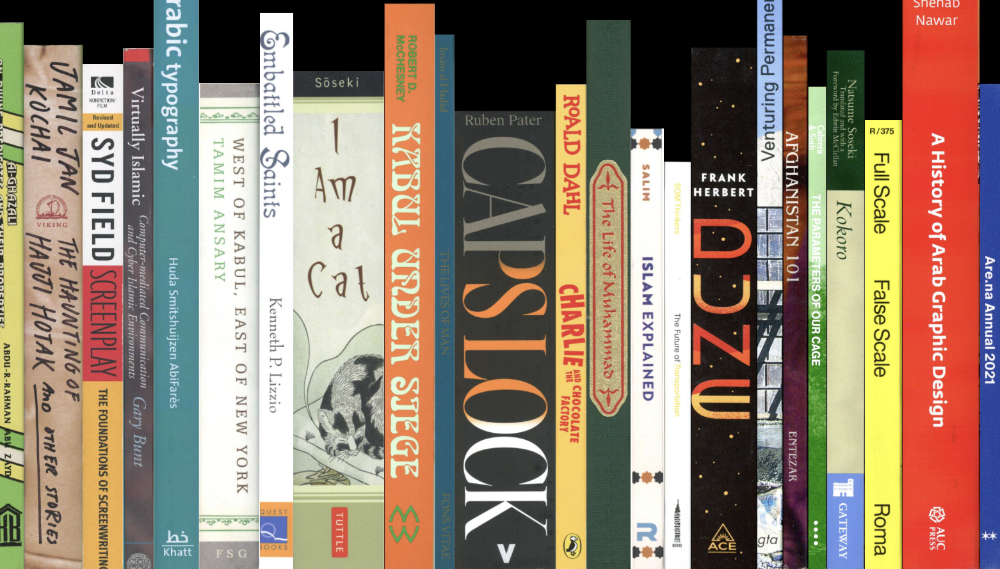

books.omarmhmmd.com
사각형을 이용해 마치 책장에 책들이 세로로 놓여져있는 것 같은 배치가 인상적이다. 한 눈에 봐도 책에 대한 내용을 다루는 웹페이지라는 것을 알 수 있다.
모바일 화면 사이즈로 축소시킨 웹사이트이다. 가로로 길게 놓아진 책들이 아래로 내려온다던가, 배경색이 변하는 등의 변화는 없다. 모바일 전용 디자인은 없는 것 같다.
웹페이지 하단에 현재 시각을 실시간으로 표시해주는 시계 기능이 탑재되어있다. 초 단위로 나타나기 때문에 손쉽게 현재 시간을 알 수 있다는 점이 편리하다.
책 위로 커서를 가져가면 해당 책 제외 배경은 불투명한 검정색으로 바뀐다. 커서는 물음표 모양으로 바뀌고 커다란 글씨로 해당 책에 대한 정보가 화면에 나타난다. 간략하게 책의 제목과 저자만 설명하는 것이 책에 대한 궁금증을 자아낸다.